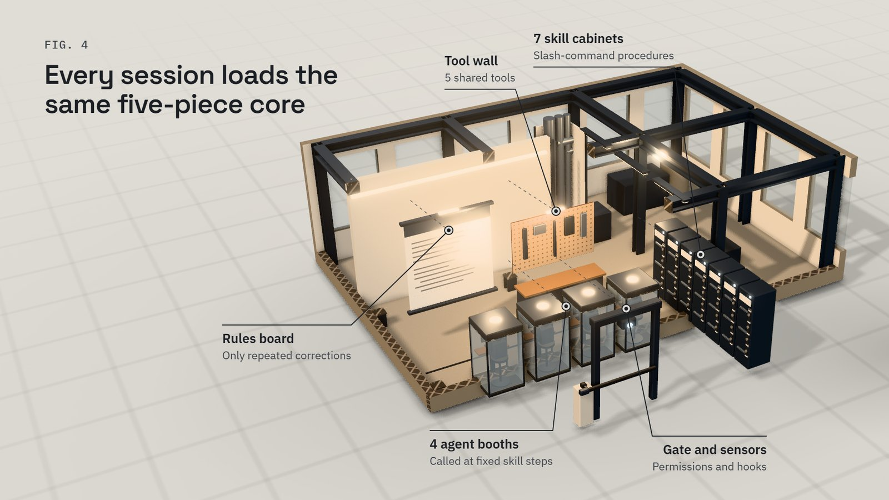
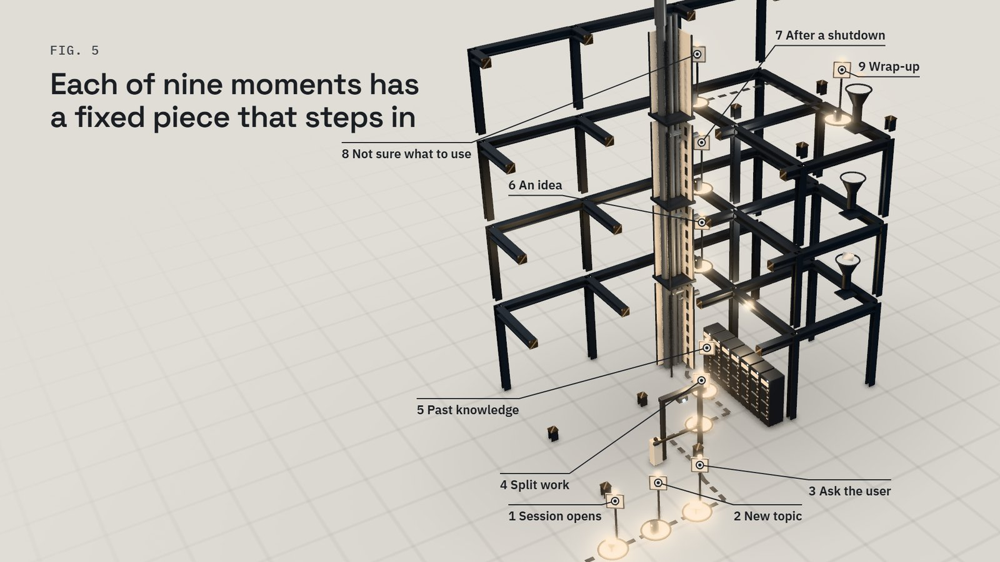
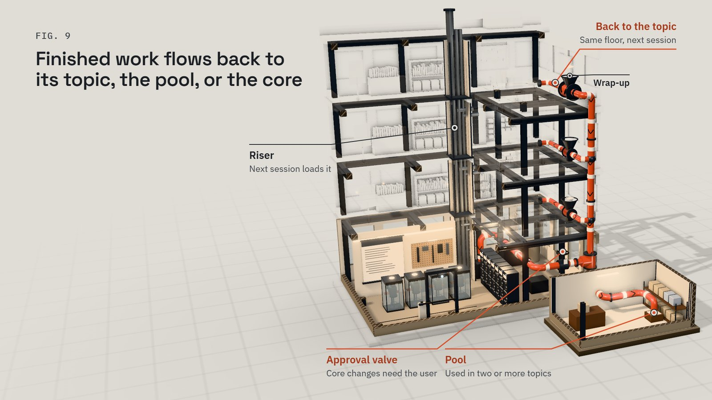

WF · Workflow Core — explainer
An AI workflow that lives in documents never reaches the work
An AI workflow written only as documents never reaches the moment of work. Install it instead into the moments where work happens — session start, project init, review, and wrap-up — and let every finished task send its lesson back to the narrowest layer where it actually repeated. This article takes apart one such system, WF (Workflow Core), which runs inside Claude Code. It has three parts: a five-piece core in every session, a workspace per topic on top of it, and a loop that carries lessons from finished work back to the topic, the pool, or the core. The design has not been piloted yet, so this article explains how it works and why, not what it saves.

Rules that exist only as documents are absent at the moment of work
A personal AI setup tends to pile up design documents while the part that acts at the moment of work stays empty. The moments are concrete: a session opens, a new topic starts, the agent needs a human decision, a session closes. A document helps at those moments only if something loads it and acts on it.
The gaps appear in predictable places. A conclusion reached in a conversation is lost unless someone writes it to a file outside that conversation. It is often unclear how to use the skills and scripts that already exist. A sub-agent whose use is left to the model's judgment tends not to be called at all. A rule edited at its source but not installed reaches no session.
WF answers with one design choice: its layers are cut by what actually gets loaded into a session, not by what gets written down. It is held to three target scenes: a new topic gets its folder, rules, and knowledge links at once; a return after a month shows purpose, decisions, and next step; a closed session leaves every conclusion in a file. The aim is that past experience, reviewed knowledge, and verified tools attach to new work by themselves.
Every floor stands on the same frame, and finished work flows back down
Picture WF as a work building drawn in cutaway, with the near walls removed. WF calls its core the skeleton; here it is the steel frame that runs through every floor, plus a plant room on the ground level. The plant room houses the five core pieces. A rules board hangs on the wall, seven cabinets hold the global skills, and four booths seat the global agents. A gate with a sensor guards the entrance, and a tool wall carries five shared tools. No floor chooses its frame: whatever topic a session works on, it stands on the same core.
A service riser runs through the building and loads the same things into every floor when a session opens. Each floor above the plant room houses one topic's workspace. A sign at the door shows the re-entry card's purpose first. Binders hold the decision log and are added to, not pulled out. Two shelves keep source material below and interpretation above, and three floor zones match the columns of the boundary table.
An orange pipe is the loop. It starts at a wrap-up hopper on each floor, and a lesson takes one of three ways. At the hopper, one branch turns straight back into the floor it came from. The rest drops down the pipe and splits again at its foot. One way leads to the pool, a shared storehouse beside the building, where other floors collect it when they next open. The other runs to the plant room through a valve that only the user opens, and from there the riser carries the change up to the next session.
However, unlike a real building, this frame does not stay fixed: lessons the floors send down change it, one line at a time, after the user marks the change. And the floors are separated by what loads into a session, not by the weight they carry.
WF is a shared core, a workspace per topic, and a loop between them
The cutaway at the top shows the three parts in order: the core at the base, topic workspaces above it, and the loop running from finished work back down.
Every session carries the same five-piece core
The core is not one document. It is five pieces that every session has: a rules document, global skills, global agents, enforcement through settings permissions and hooks, and shared tools. One rule decides what belongs there: anything used at some moment regardless of topic, or called by a core skill, is core; anything a topic picks and takes lives in the pool.

Names carry the structure. Every item WF manages starts with wf-, a topic's own items carry the topic's prefix, and anything without a prefix is a built-in Claude Code feature. The rest of the name says what the item does, as in wf-project-init. Typing /wf- in the terminal autocompletes the full list, the lightest form of help.
The rules document itself holds only failures and corrections that repeated across several categories of work, such as career, learning, or life; category rules go to a category document, and topic rules stay with the topic. The global CLAUDE.md pulls it into every session with an @ import.
Every agent call is tied to a fixed step of a skill
A skill is a packaged set of instructions, started with a slash command or by the words in its description; WF installs seven as user-level skills, so each command is exactly /wf-…. Three carry the main flow: /wf-project-init starts or re-shapes a topic, /wf-review-page builds a page for a human decision, and /wf-project-wrap closes a session. The other four answer usage questions, search past knowledge, file an idea, and recover after a forced shutdown.
A sub-agent is a separate model run with its own context that returns a result. WF keeps one separate only when it is called repeatedly under the same contract and either its reading would eat much of the main context or it needs eyes other than the maker's. Four pass that test. A scout reads precedents before init asks anything; a researcher puts a source on every fact; a second reader re-reads judgment-bearing results in a clean context; a refiner sorts lessons at wrap-up.
None of them waits for the model to decide to call it. Every call is tied to a fixed step of a skill, because calls left to the model's judgment are not made. So the user does not need agent names; "start new work" or "wrap up" is enough.
Hooks and permissions make the moments happen without being asked
A hook is a command the harness runs at a fixed event. At session start, WF's hook shows the re-entry card's purpose, current state, and next first action, plus any difference between the canonical core and the installed copy. It exists because the mechanism with reported effect is a fixed first action of the next session, not text telling the model to read a file.
Permissions cover the other side. The "ask" list is reserved for irreversible commands such as recursive delete and force push, and anything that creates or widens publication stays behind a confirmation prompt. A permission check blocks the AI from changing its own settings, so settings changes arrive as a script the user runs. Five shared scripts complete the core, among them redact_check.py, the gate before anything is published.
Each of the nine moments of a session has a fixed thing that steps in
The rules document opens with a table that ties each moment to what steps in.
| Moment | What steps in |
|---|---|
| A session opens | Rules and the category document load; the hook shows purpose, state, and next action |
| New topic, long-idle topic, or change of direction | /wf-project-init, with the scout and researcher agents |
| Asking the user for judgment, approval, or action | /wf-review-page |
| Splitting work | The delegation rules |
| Looking for past knowledge | /wf-ask |
| An idea comes up | /wf-idea |
| After a forced shutdown or long absence | /wf-recover |
| Not sure what to use | /wf-help, answered from the maps |
| Closing a session or round | /wf-project-wrap, with the refiner and, when judgment is involved, the second reader |

Most rows name a skill or a hook rather than a paragraph to remember; the delegation row is the exception, and its rules load with the rules document at session start.
Each topic keeps its own workspace on top of the core
A topic workspace holds a short CLAUDE.md, a re-entry card, a decision log, done conditions, a first task, and copies of the skills and agents it took from the pool. The re-entry card puts the purpose at the top and is overwritten; the decision log deletes nothing and marks overturned decisions as superseded. A boundary table with three columns — do without asking, stop and ask, separate approval — sets how far the agent goes alone. A force push, for example, needs separate approval. Domain knowledge splits into a source layer of primary material and an interpretation layer that must cite it.
Knowledge lives only at the narrowest layer where it repeated
WF has no central knowledge store, only machine-built maps and a question window. Four rules govern what stays. Store only what the model does not know; the test is "would the next session behave worse without this sentence?" A rule becomes a rule only by repetition, and its scope widens only as far as it repeated. Escalate to the user only when something changes other work, is hard to reverse, or needs a fact only the user knows. Retire unused knowledge without asking. Status snapshots, asset lists, and plans are not knowledge and are not stored.
Finished work sends its lessons to the topic, the pool, or the core
Init reads the request and the few map lines that fit the job, then writes an understanding sheet that marks each line as original, precedent, or inference. The user corrects only the inferred lines. During the work, the main session decides, commits, and talks to the user, while agents get reading, research, and verification under a written contract.

Wrap-up writes a process record, and the refiner sorts its lessons. Topic-scope lessons are applied at once, a category or core change becomes one line for the user to mark, and general skill improvements go to the pool without asking. Nothing enters the core without that mark. The maps are rebuilt, and the next session opens with the hook showing purpose and next action.
The pool carries one topic's improvement to another. A topic works on its own copy of a pool item; at wrap-up, changes that help other topics go upstream, and other topics pick them up the next time they open. An item enters the pool only after real use in two or more topics. An item with no recorded use for more than 90 days becomes a retirement candidate at wrap-up; a retired item moves to a retired folder rather than being deleted.
The core changes like a codebase: canonical source, approval, installer
The canonical source is one git repo, such as ~/workspace/wf-core/, and sessions read only the copy an installer places in the user-level Claude config directory. A change means editing the source, dry-running the installer to see the difference, then applying. Because a change to the rules or a global skill changes every session, the lines to change go on a review page for approval first. A new global skill counts as installed only after a fresh session, started with claude -p, actually reads it and changes behavior, as judged by another agent.
The human marks at most two cells, on a page built from the real files
The AI gathers, judges, and shows the real files; the human marks only the few decisions that are hard to reverse or that only the human knows. The review page shows what changes where — real path and file name — before and after, and the actual content, and the user marks items right, fix, or drop. The AI leads with its assumptions and a recommendation, and the user marks at most two cells. The exception is external publication: the user reads the full public text and marks each paragraph, because publication cannot be undone.
The two usual objections fail on where things load and when agents run
"Why not one long CLAUDE.md?"
A long file loads every session, but loaded text is not an action at a moment; that is why the session-start hook exists. A long file cannot stop a force push; the permission list does. And one file has no scope: a pitfall from one topic would sit in front of every other topic. WF puts each rule at the scope where it repeated and writes it in one layer only.
The trade-off is many small files instead of one. WF pays for it with maps a machine builds and nobody edits by hand, a /wf-help that answers from those maps, and an installer that shows the difference before anything changes.
"Don't many agents make it expensive and complex?"
WF limits agents by rule rather than by taste. An agent exists only when the same contract repeats and the work would flood the main context or needs a second pair of eyes; four pass that test globally. Each sits at a fixed skill step, so the full set of calls is visible in the skills rather than scattered across the model's choices. Batches stay small and are checked before the next one starts. Checks follow the same cost logic: no excessive gates, no hidden exhaustive checks.
What WF does not economize on is the second reader, because a conclusion reviewed in the session that made it carries the same misunderstanding. That is the trade-off: one extra agent run where judgment is involved, in exchange for a reader that did not make the mistake.
The design is not yet piloted, and its own rules decide what gets cut
Nothing here is a measured result; the system has not been piloted, so this article claims no time saved and no quality gained. What WF has is a rule for finding out: usefulness is judged by records of use, not by argument. Rules are unfinished on purpose; only what repeats gets added.
Two limits are worth naming. WF rides on one tool's features — skills, sub-agents, hooks. One of its principles is to keep assets independent of any one tool, with tool configuration as a thin adapter. And it does not remove the human: decisions that are hard to reverse, facts only the user knows, and every public text still go to the user.
Start from the moment, not the document
The cutaway at the top and the interactive 3D model that accompanies this article show the same structure: pick any moment of work and see which piece of the system steps in. If your own setup has become a stack of documents, start where WF started: what actually loads, and what actually runs, at each moment of a session?